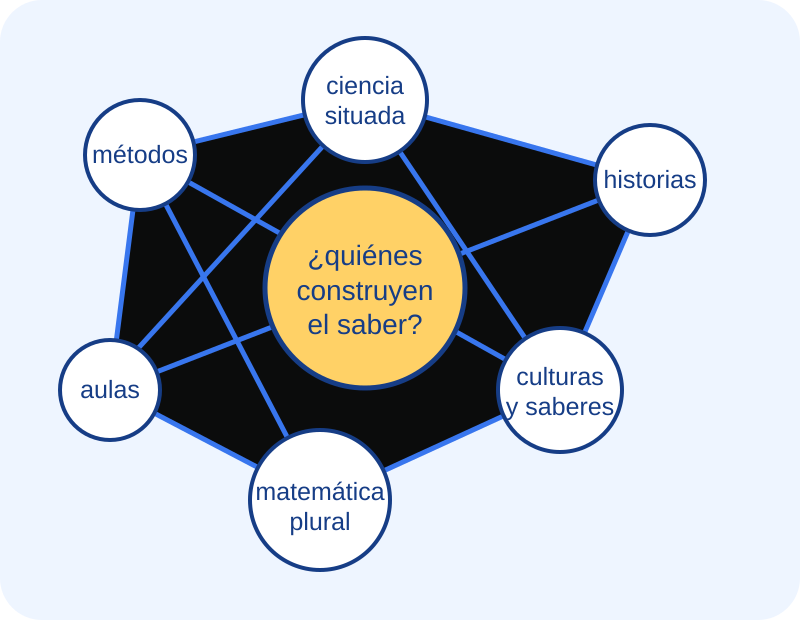
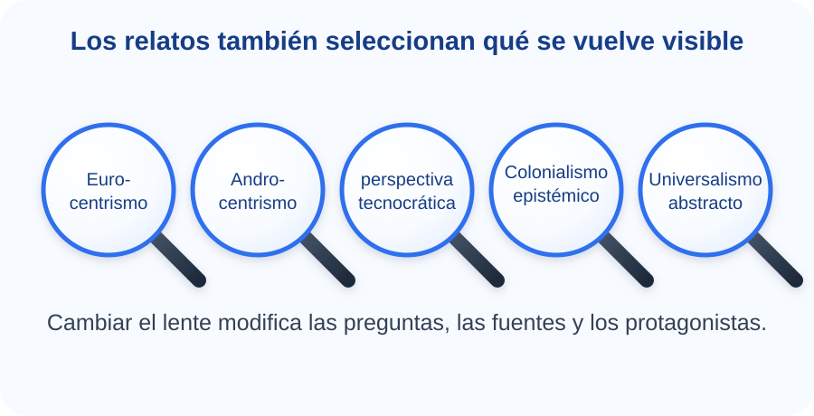

Problema epistemológico
La epistemología estudia la investigación científica, sus productos y las condiciones de producción y validación del conocimiento. La consigna invita a diferenciarla de la filosofía general, la gnoseología y la metodología.
Cápsula de aprendizaje · Profesorado en Matemática · UNCo
Epistemología, relatos de ciencia y sesgos para revisar aquello que aprendimos a llamar “historia de la matemática”.
El recorrido tiene cuatro entradas, pero tres etapas obligatorias: pensar la ciencia, discutir el mito de los grandes hombres y repensar una historia matemática no eurocéntrica. Lugo se encontraran con una entrada llamada: Del análisis a la autoría

Antes de explorar
La cápsula acompaña la Actividad Evaluativa 1. No resume los textos para reemplazar su lectura: ofrece preguntas, contrastes y estrategias para leerlos y producir los escritos solicitados.
¿Qué cambia cuando dejamos de preguntar solamente “quién descubrió” y comenzamos a preguntar “en qué condiciones, con qué saberes y mediante qué relatos se construyó”?
Navegación no lineal
Podés comenzar por cualquier nodo. Para completar la actividad evaluativa, visitá los nodos 1, 2 y 3. El nodo 4 ayuda a relacionarlos y preparar la escritura.
Nodo 1 · Sección 1 de la actividad
La palabra epistemología deriva de las palabras griegas epistéme, que podría traducirse como “conocimiento” similar al que hoy llamamos ciencia; y lógos, que significa “conocimiento” o “estudio”. Por lo que podría entenderse a la epistemología como el “estudio del conocimiento científico”, o simplemente teoría del conocimiento. La epistemología refiere exclusivamente a los problemas del conocimiento científico: las circunstancias históricas, psicológicas y sociológicas que llevan a su obtención y los criterios con los cuales se lo justifica o invalida; es decir, las condiciones de producción y validación del conocimiento científico.
¿La ciencia se define por sus resultados, por sus métodos, por su organización o por el modo en que justifica sus afirmaciones?
La epistemología estudia la investigación científica, sus productos y las condiciones de producción y validación del conocimiento. La consigna invita a diferenciarla de la filosofía general, la gnoseología y la metodología.
Los materiales cuestionan una imagen única y cerrada: hablar de el método científico puede ocultar la pluralidad de procedimientos, disciplinas y transformaciones históricas.
Boido usa la relación entre realidad, verdad y lógica para mostrar que la aparición de geometrías no euclidianas obliga a revisar supuestos que parecían evidentes.
La pregunta epistemológica no busca una definición final. Interroga cómo se construyen, justifican, comunican y revisan las afirmaciones científicas. En la formación docente, esta reflexión permite decidir qué imagen de ciencia se transmite en el aula.
Te invitamos a completar la siguiente tabla (lo que escribís sólo queda en tu dispositivo).
| Pregunta | Díaz y Heler | Bunge | Klimovsky / Boido |
|---|---|---|---|
| ¿Qué se considera ciencia? | |||
| ¿Cómo se valida? | |||
| ¿Qué problema deja abierto? |
No busques que todos digan lo mismo: registrá diferencias, énfasis y preguntas.
Miralo para identificar qué supuestos cambian cuando la ciencia deja de presentarse como neutral, acumulativa y separada de su contexto.
Abrir video en YouTubeNodo 2 · Sección 2 de la actividad
¿Qué desaparece cuando la historia de la ciencia se cuenta como una cadena de genialidades individuales?
“Ningún gran hombre se basta a sí mismo en ningún terreno cultural, y mucho menos en la ciencia.”
Cita textual de J. D. Bernal, reproducida en la consigna. La lectura propone desplazar la mirada desde el individuo aislado hacia condiciones sociales, instituciones, trabajos previos y cooperación.
“Una persona excepcional descubre una verdad gracias a su genialidad.”
Preguntá por problemas disponibles, saberes previos, colaboradores, instituciones, instrumentos, conflictos y condiciones materiales.
Nodo 3 · Sección 3 de la actividad
¿Qué se reconoce como matemática y qué trayectorias desaparecen cuando Europa se presenta como origen y centro?

¿Qué centro, sujeto universal o idea de progreso organiza el relato?
¿Qué culturas, prácticas, lenguajes o formas de transmisión quedan subordinadas?
¿Qué fuentes y categorías permitirían narrar una historia plural y situada?
Contrasta trayectorias eurocéntricas y alternativas. Propone pensar desarrollos independientes y múltiples circulaciones del conocimiento matemático entre culturas.
La etnomatemática reconoce la generación, organización y transmisión cultural de saberes como contar, medir, clasificar y ordenar; cuestiona una historiografía reduccionista.
Invita a releer los textos babilónicos sin traducirlos automáticamente a categorías aritméticas modernas, atendiendo a sus propias técnicas y significados.
Después de mirar, elegí una afirmación y contrastala con Joseph o D’Ambrosio. La función del video es abrir ejemplos; la lectura sostiene la argumentación.
Abrir video en YouTubeNodo 4 · Integración transversal
¿Cómo pasar de una opinión general a una reflexión argumentada?
Actividad interactiva
Resolvé tres casos. La devolución explica qué problema epistemológico o historiográfico está en juego.
Bitácora personal
Estas notas se guardan solamente en este navegador y en este dispositivo.
Pausa musical
Colocá una pieza autorizada en assets/audio/pausa-reflexiva.mp3. Esta elección queda abierta porque los materiales no definen una obra musical específica.
¿Qué nombres aparecen primero cuando pensás en la historia de la matemática?
Bibliografía y créditos
Propuesta docente y selección de materiales: Lucas Colipe, Universidad Nacional del Comahue.
Asistencia de IAG: se utilizó inteligencia artificial generativa para organizar la arquitectura de navegación, redactar borradores de microcontenidos y programar HTML, CSS y JavaScript. La selección conceptual, la pertinencia didáctica y la revisión final corresponden al autor docente. La cápsula no atribuye a la IAG la autoría de los textos fuente ni reemplaza su lectura.
Las síntesis de esta cápsula son paráfrasis. La única cita textual destacada es la de Bernal, ya reproducida en la consigna de la actividad.